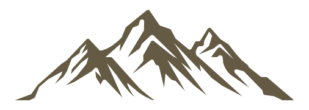
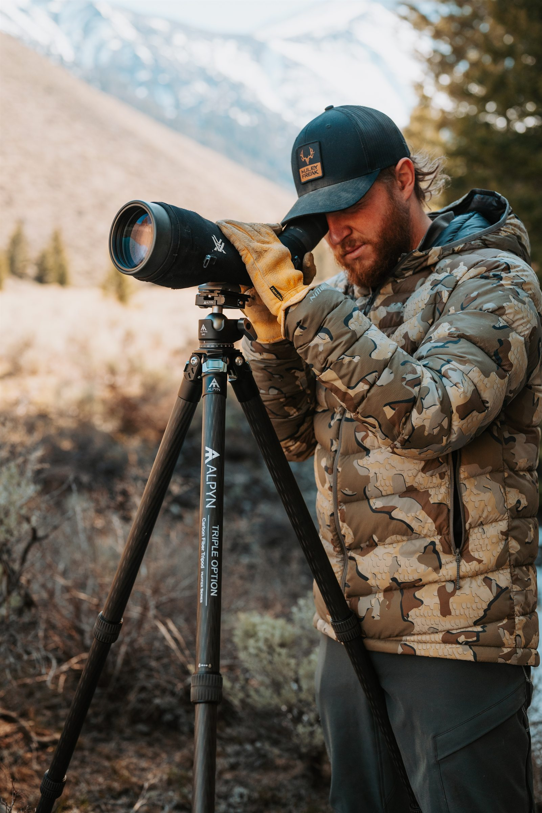
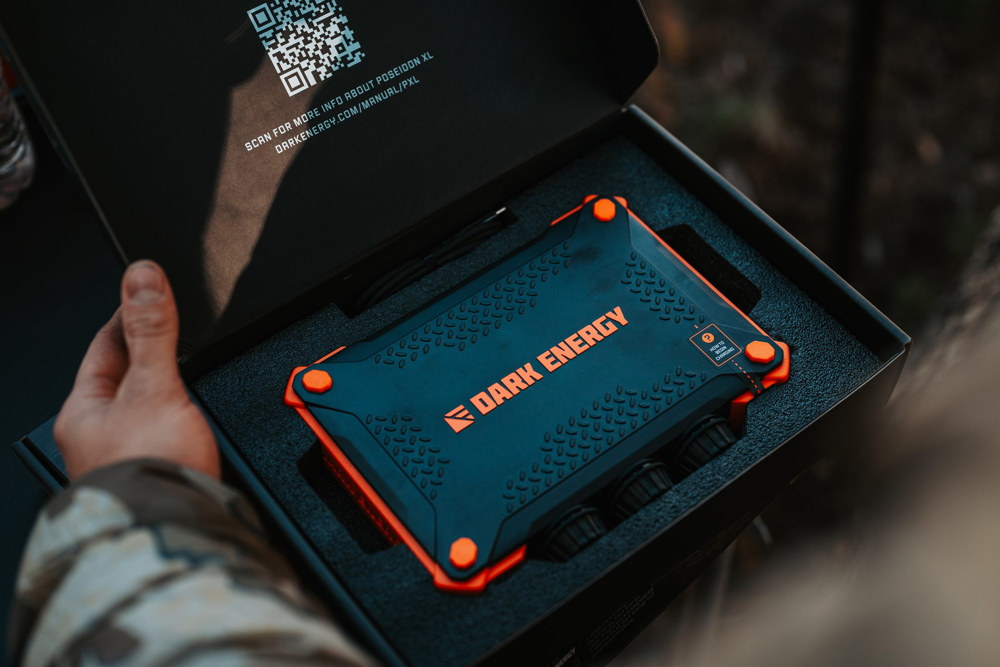
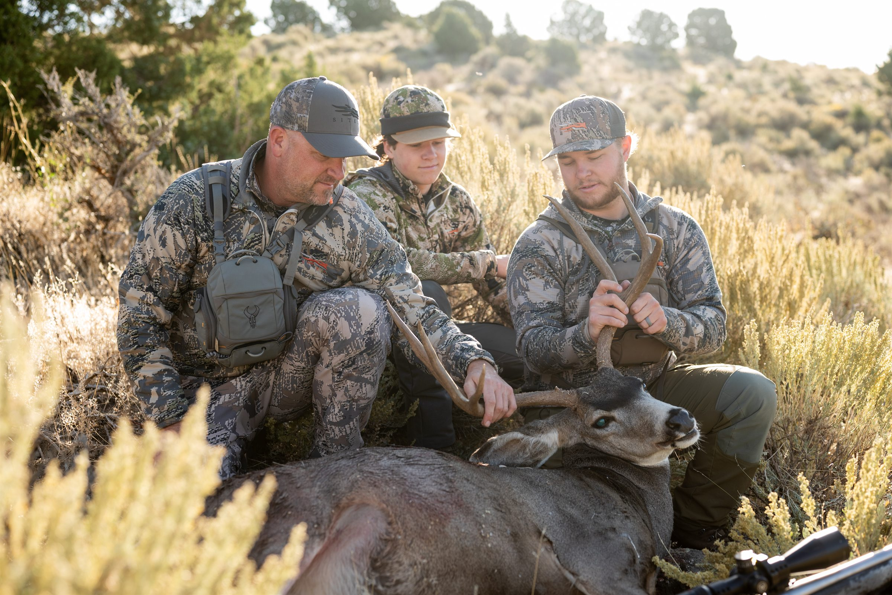

The Hunt
Big Game ShootPhotograph experienced hunters in action, pack-in and pack-out scenes, gear preparation, field setups, tracking, and glassing in rugged and beautiful backcountry.
Aug. 15th - 2:00 pm to 7:00 pm

A half-day outdoor photography experience featuring big-game hunting, fly fishing, authentic gear, and real backcountry environments. Capture experienced outdoorsmen in action, receive gear from workshop partners, and learn how to create brand-ready images that can grow your portfolio and your business.
The Offer
Capture experienced outdoorsmen in action, receive gear from workshop partners, and learn how to create brand-ready images that can grow your portfolio and your business.
We take time before each shoot to walk you through the setup, best settings, and ideal framing so you can make the most of every scene.
Secure Your SpotBrand Partners
Add partner logos here and point each logo to that brand's website.
Shoot Day
A half-day outdoor photography experience featuring big-game hunting, fly fishing, authentic gear, and real backcountry environments.
Photograph experienced hunters in action, pack-in and pack-out scenes, gear preparation, field setups, tracking, and glassing in rugged and beautiful backcountry.
Capture anglers in the water through casting, movement, landing fish, catch-and-release moments, gear details, preparing fish, and the full story of a day on the river.
Photograph the gear trusted by experienced outdoorsmen while learning how brands use visual style, voice, and storytelling. Leave with brand-ready portfolio images, practical marketing knowledge, and opportunities to build industry connections.
Workshop Coordinators
Meet the team helping shape the shoot day, keep the sets moving, and connect photographers with practical outdoor brand experience.

Who It Is For
This workshop is useful whether you are newer to your camera or already established and looking to add stronger outdoor, hunting, fly fishing, and lifestyle images to your portfolio.
Outdoorsman Photo Examples


Customer Reviews
"This workshop was amazing! So much fun and everyone was so kind and helpful. So many opportunities to get incredible shots!"
"Very thoughtfully put together, great content and connections! The whole day was seamless and such a good time!! Can't wait for the next thing they offer!"
Frequently Asked Questions
Both. We have had people come out who just got their camera a couple weeks before the workshop, and well established photographers. Even if you've been shooting for 30+ years, there will be something new for you here.
We take time before each shoot to walk you through the shoot, best settings, and ideal framing to get the best shots.
At its heart, this is a portrait and action workshop, set ups with models and fast moving animals. They just happen to be wearing cowboy hats sometimes, but the skills and, more importantly, the pictures you get from this will help you land clients.
I get it, walking into a workshop with other photographers can feel intimidating at first. But trust me, the nerves disappear fast. From the moment you arrive, you'll be surrounded by friendly people, great energy, and endless photo ops. You'll leave with new friends, incredible shots, and a real taste of Western style.
Absolutely. There will be a lot of action shots and some amazing backdrops perfect for video work.
Only Current Workshop Open
A half-day outdoorsman photo workshop built for portfolio growth, brand-ready images, and practical field experience.
Secure Your Spot